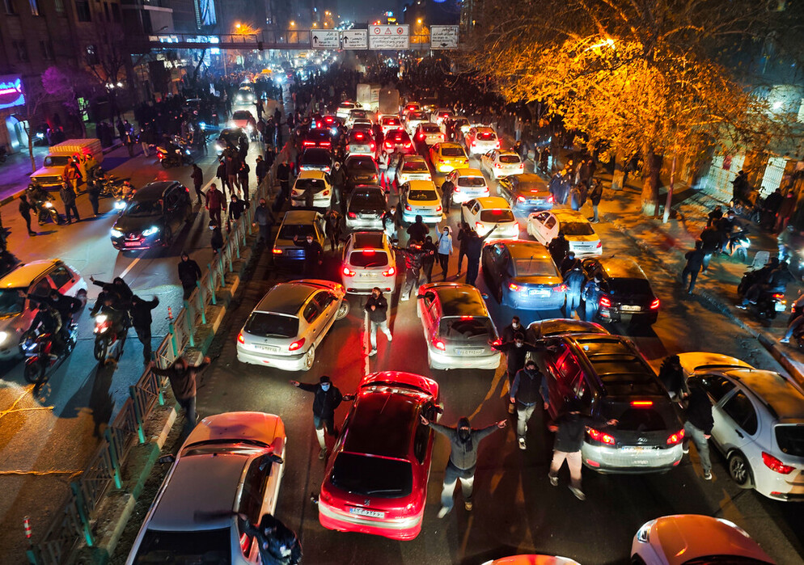

Explosion near downtown
Smoke rises above buildings after an air strike; emergency services move toward the scene.
Credit: Photographer / Agency —
Source link
Neutral, sourced reporting cards. Replace placeholder images in
assets/ with licensed newsroom photos or your own photos.
Include a short caption describing what the image shows and credit the
photographer or agency.
Smoke rises above buildings after an air strike; emergency services move toward the scene.

Damaged structures and rubble in Tehran following US and Israeli strikes, showing the impact on infrastructure. — Majid Asgaripour/WANA via Reuters

Citizens gather in Tehran during a public demonstration, reflecting the emotional and political response of the population following escalating tensions and military actions.